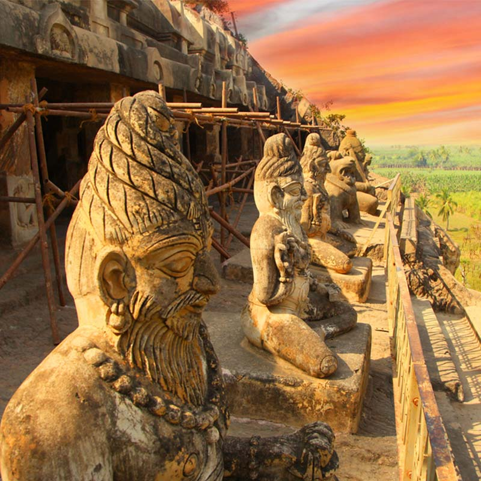

Andhra Pradesh

Kerala is situated on the southwestern tip of India. The state of
Kerala is divided into hills and valleys, midland plains and coastal
belts. The backwaters suitated along the coastal betls are one of
the main tourist attraction of Kerala. Kerala is also popularly
known as "Gods Own Country" because of its breathtaking natural
beauty and greenary.